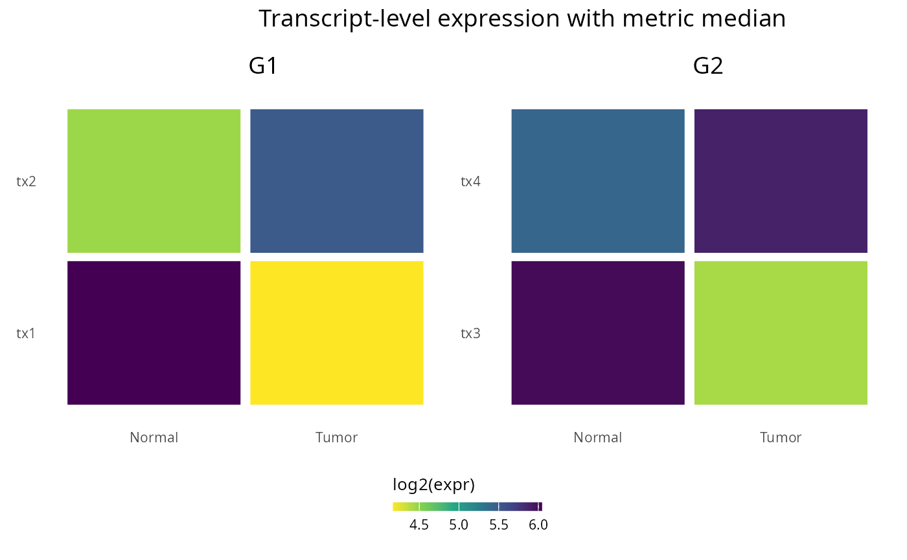

Plot top transcripts for a gene #' For a given gene, find transcripts using a tx->gene mapping, compute per- Plot top transcripts for a gene For a given gene, find transcripts using a tx->gene mapping, compute per- transcript statistics between two sample groups, select the top N transcripts by p-value and plot their expression across groups.
Source:R/generate_plots.R
plot_top_transcripts.RdPlot top transcripts for a gene #' For a given gene, find transcripts using a tx->gene mapping, compute per- Plot top transcripts for a gene For a given gene, find transcripts using a tx->gene mapping, compute per- transcript statistics between two sample groups, select the top N transcripts by p-value and plot their expression across groups.
Arguments
- counts
Matrix or data.frame of transcript counts. Rows are transcripts and columns are samples.
- gene
Character; gene symbol to inspect.
- samples
Character vector of sample group labels (length = ncol(counts)).
- tx2gene
Path or data.frame mapping transcripts to genes. Must contain columns `Transcript` and `Gen`.
- top_n
Integer number of transcripts to show (default = 3). Use NULL to plot all transcripts for the gene.
- pseudocount
Numeric pseudocount added before log2 (default = 1e-6) to avoid division by zero.
- output_file
Optional file path to save the plot. If `NULL`, the `ggplot` object is returned.
- metric
Aggregation metric used to summarize transcript expression per group when plotting. One of c("median", "mean", "variance"). Defaults to "median" to preserve previous behavior.
Examples
tx_counts <- matrix(
sample(1:100, 24, replace = TRUE),
nrow = 6
)
rownames(tx_counts) <- paste0("tx", seq_len(nrow(tx_counts)))
colnames(tx_counts) <- paste0("S", seq_len(ncol(tx_counts)))
tx2gene <- data.frame(
Transcript = rownames(tx_counts),
Gen = rep(paste0("G", seq_len(3)), each = 2),
stringsAsFactors = FALSE
)
samples <- rep(c("Normal", "Tumor"), length.out = ncol(tx_counts))
plot_top_transcripts(
tx_counts,
gene = c("G1", "G2"),
samples = samples,
tx2gene = tx2gene,
top_n = 2
)
